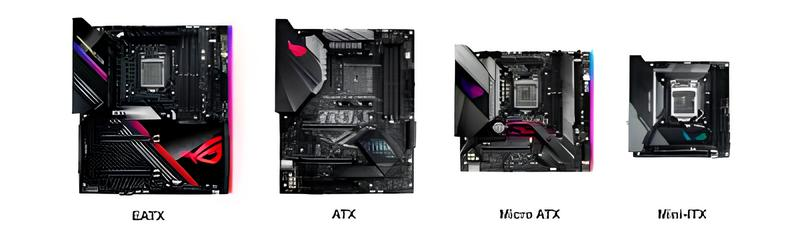
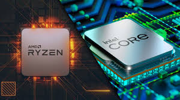
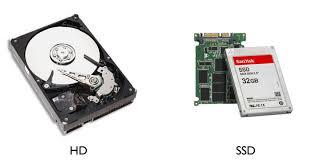
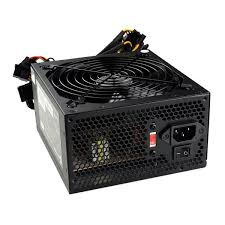
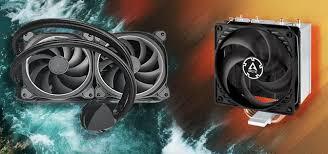
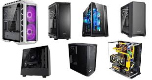

Introdução – Montagem e Manutenção de Computadores
A tecnologia está presente em quase todos os aspectos da nossa vida, e o computador se tornou uma das ferramentas mais importantes do dia a dia. Porém, muitas vezes, ele é visto apenas como uma “caixa preta”: usamos, mas não entendemos realmente como funciona por dentro. É exatamente aqui que entra a montagem e manutenção de computadores. Este site foi criado para guiar você nesse universo, mostrando desde os conceitos básicos até tópicos mais aprofundados que vão ajudá-lo a compreender, montar, reparar e até otimizar o desempenho de um PC.
O que você vai encontrar aqui?
Componentes de Hardware
- Explicações detalhadas sobre cada peça do computador: placa-mãe, processador, memória RAM, HD/SSD, placa de vídeo, fonte, refrigeração e gabinetes.
- Como escolher os componentes certos e entender sua compatibilidade.
Passo a passo da Montagem
- Guia ilustrado para montar um computador do zero, com dicas de segurança, organização de cabos e boas práticas.
- Orientações para iniciantes e também macetes para quem já tem experiência.
Manutenção Preventiva e Corretiva
- Como realizar limpezas internas e externas.
- Identificação de falhas comuns e como corrigi-las.
- Técnicas para prolongar a vida útil do PC.
Soluções de Problemas Reais
- O que fazer quando o computador não liga?
- Como resolver problemas de superaquecimento?
- Diagnóstico de lentidão e travamentos.
Aprofundamento em Performance
- Overclock, upgrades e ajustes para extrair o máximo do hardware.
- Comparativos entre peças para ajudar na escolha da melhor configuração.
Qual o atual objetivo?
Este site tornará o aprendizado acessível e prático, mostrando que montar ou consertar um computador não é um bicho de sete cabeças. Com o conteúdo disponível aqui, você vai adquirir confiança para lidar com seu PC e ainda abrir portas para novas oportunidades na área de tecnologia.
Montagem de Computadores
A montagem de computadores é o processo de reunir e conectar os diversos componentes de hardware para formar um sistema funcional. Diferente de simplesmente comprar um computador pronto, a montagem oferece a possibilidade de personalizar cada parte de acordo com a necessidade do usuário — seja para tarefas simples, estudos, trabalhos de escritório, design, edição de vídeo ou jogos.
Esse processo vai muito além de apenas encaixar peças: ele envolve planejamento, compatibilidade e boas práticas técnicas. Cada componente — como placa-mãe, processador, memória RAM, placa de vídeo, fonte de alimentação, armazenamento e gabinete — precisa ser escolhido de forma adequada, garantindo que trabalhem em conjunto sem incompatibilidades.
1. Preparação e Segurança
Antes de começar, certifique-se de trabalhar em um ambiente limpo e bem iluminado. Use uma pulseira antiestática ou descarregue a eletricidade tocando em superfícies metálicas, evitando danos aos componentes. Mantenha todas as peças próximas e verifique se possui as ferramentas necessárias, como chaves de fenda e abraçadeiras para cabos.
2. Ordem de Montagem
Uma boa sequência facilita o processo:
- Instale a fonte de alimentação.
- Monte a placa-mãe com processador, cooler e memória RAM.
- Fixe a placa-mãe no gabinete.
- Adicione a placa de vídeo e outros dispositivos de expansão.
- Conecte os cabos de energia e dados.
- Finalize com a instalação dos discos (SSD/HDD).
3. Organização de Cabos
Um dos segredos para um PC bem montado é a gestão dos cabos. Use canaletas do gabinete, abraçadeiras plásticas ou velcro para manter os fios alinhados. Isso não só melhora o visual, como também contribui para a circulação de ar, evitando superaquecimento.
4. Boas Práticas
- Sempre leia o manual da placa-mãe e dos componentes.
- Aplique pasta térmica de forma moderada no processador.
- Evite forçar encaixes: se não entrou, verifique a posição correta.
- Teste o sistema antes de fechar o gabinete.
5. Macetes para Usuários Experientes
- Use cabos customizados ou extensões para um visual mais clean.
- Aposte em sistemas de refrigeração líquida para maior eficiência térmica.
- Configure o gerenciamento de ventoinhas na BIOS para otimizar ruído e desempenho.
- Utilize organizadores magnéticos para manter parafusos e ferramentas sempre à mão.
Manutenção de Computadores: Seus tipos e importância
A manutenção de computadores é um conjunto de ações realizadas para garantir o bom funcionamento das máquinas, prolongar sua vida útil e evitar falhas que possam prejudicar o usuário. Assim como qualquer outro equipamento, os computadores também precisam de cuidados regulares, seja para corrigir problemas já existentes ou para preveni-los.
1. Manutenção Preventiva
A manutenção preventiva é realizada de forma programada, antes que ocorram falhas. Seu objetivo é evitar problemas futuros e manter o computador em ótimo estado de uso. Algumas ações comuns nesse tipo de manutenção incluem:
- Limpeza interna do gabinete, removendo poeira de coolers e componentes. Podendo utilizar um soprador de ar (ou secador de cabelo no modo frio), pincéis antiestáticos, um pano de microfibra, álcool isopropílico, e cotonetes.
- Verificação de cabos e conectores para evitar mal contato e manter o bom funcionamento do computador.
- Atualização de drivers e sistema operacional, para então extrair o máximo de desempenho possível.
- Testes de desempenho e temperatura para garantir a confiabilidade e a durabilidade do computador, identificando falhas e otimizando o funcionamento antes que problemas maiores ocorram.
2. Manutenção Corretiva
A manutenção corretiva ocorre quando o computador já apresenta falhas ou parou de funcionar. Nesse caso, a prioridade é identificar a causa do problema e realizar o reparo. Exemplos:
- Troca de componentes queimados ou danificados.
- Reparo de falhas no sistema operacional.
3. Manutenção Preditiva
A manutenção preditiva é baseada no monitoramento constante dos computadores, utilizando softwares que analisam o desempenho e identificam possíveis falhas antes que aconteçam, como por exemplo, softwares que monitoram a temperatura da CPU e GPU, e análises gerais.
4. Manutenção Evolutiva
A manutenção evolutiva busca melhorar o desempenho e atualizar os recursos do computador. Diferente das demais, ela não trata de problemas, mas sim de upgrades. Exemplos:
- Instalação de mais memória RAM.
- Substituição de HD por SSD.
- Upgrade de placa de vídeo.
- Implementação de sistemas de refrigeração mais eficientes.
Componentes
Quando falamos em montar um computador, o primeiro passo é entender a função de cada componente. A placa-mãe é a peça central, onde todos os outros componentes se conectam. Ela possui o soquete do processador, slots de memória RAM, entradas para armazenamento (como SSDs e HDs), além de conexões para placa de vídeo e periféricos. Cada placa-mãe tem um chipset que define seus recursos e limitações, como suporte a overclock, número de portas USB e velocidade de comunicação. As mais comuns seguem os tamanhos ATX, Micro-ATX e Mini-ITX. Antes de comprar, é essencial verificar a compatibilidade com o processador e a memória que você pretende usar. Marcas conhecidas são ASUS, Gigabyte, MSI e ASRock.
O processador (CPU) é considerado o cérebro do computador. Ele executa cálculos e instruções, trabalhando em conjunto com a RAM para dar vida ao sistema. Alguns detalhes importantes são os núcleos (cores), que funcionam como processadores independentes; os threads, que permitem multitarefas; e a frequência (GHz), que mede a velocidade de operação. Para uso simples, como estudos e navegação, processadores Intel i3 ou Ryzen 3 já dão conta. Para jogos, i5 ou Ryzen 5 são o ideal, enquanto para tarefas mais pesadas como edição de vídeo, i7/i9 ou Ryzen 7/9 se destacam.
A memória RAM é responsável por armazenar informações temporárias que o processador precisa acessar rapidamente. Hoje, os tipos mais usados são DDR4 e DDR5, e sua velocidade é medida em MHz (por exemplo: 3200MHz ou 5600MHz). Quanto maior a frequência e a capacidade, melhor o desempenho. Uma curiosidade é que usar a RAM em dual channel (dois pentes iguais) garante maior performance. Para uso básico, 8GB é suficiente, mas para jogos e multitarefas o ideal é partir de 16GB. Marcas confiáveis são Corsair, Kingston, Crucial e G.Skill.

A placa de vídeo (GPU) é essencial para quem joga, trabalha com design ou edição de vídeo. Ela processa os gráficos e pode ser integrada ao processador (em PCs básicos) ou dedicada, conectada no slot PCIe da placa-mãe. O desempenho de uma GPU depende de fatores como a memória VRAM, a arquitetura e a eficiência energética. É importante destacar que, em muitos casos, a placa de vídeo impacta mais o desempenho em jogos do que o próprio processador. As principais opções são NVIDIA (GeForce) e AMD (Radeon), sendo fabricadas por marcas como ASUS, MSI, Gigabyte e EVGA.

O armazenamento é dividido principalmente em dois tipos: HDs (discos rígidos), que oferecem muito espaço a um custo baixo, mas são lentos; e SSDs, que são muito mais rápidos e ideais para o sistema operacional e programas. Dentro dos SSDs, existem os modelos SATA (bons e acessíveis) e os NVMe (M.2), que usam a tecnologia PCIe para atingir velocidades muito superiores. A recomendação atual é usar pelo menos um SSD para o sistema e, se necessário, um HD para guardar arquivos grandes. Marcas como Kingston, Crucial, WD e Samsung são bastante confiáveis.
A fonte de alimentação (PSU) é um dos componentes mais subestimados, mas também um dos mais importantes. Ela converte a energia elétrica da tomada e a distribui para todos os outros componentes. Uma fonte ruim pode causar travamentos e até queimar peças. Por isso, sempre prefira fontes com certificação 80 Plus, que garantem eficiência e segurança. Marcas confiáveis são Corsair, EVGA, Seasonic e Cooler Master. O ideal é calcular a potência necessária de acordo com sua configuração, evitando exageros ou falta de energia.
Para manter tudo funcionando em temperatura ideal, entra o sistema de refrigeração. Ele pode ser composto por coolers a ar, mais baratos e fáceis de instalar, ou water coolers, que usam líquido para resfriar o processador e oferecem desempenho maior, muito usados em PCs gamers. O cooler stock (que vem com o processador) geralmente dá conta em PCs simples, mas se você pretende jogar ou fazer overclock, é importante investir em uma refrigeração melhor.
O gabinete (case) é a estrutura que abriga todos os componentes. Ele protege contra poeira, facilita a organização dos cabos e ajuda no fluxo de ar. Os tamanhos mais comuns são Full Tower, Mid Tower e Mini Tower, cada um com espaço interno diferente. Além disso, gabinetes modernos costumam ter vidro temperado e iluminação RGB, mas a prioridade deve ser sempre a ventilação e o espaço para futuros upgrades. Boas marcas são NZXT, Corsair, Cooler Master e Redragon.
| Componentes | Modelos e Preços |
|---|---|
| Placa-mãe | ASUS TUF Gaming B550M‑Plus (R$ 888,99), Gigabyte B550M Aorus Elite (R$ 879,00) Boas marcas, suporta memória decente, chipset B550. |
| Processador | Intel Core i5‑12400F (~R$ 709,99), AMD Ryzen 5 5600 (~R$ 849,90) Ótimo custo-benefício para PCs de uso geral / jogos recentes. |
| Memória RAM | Corsair Vengeance DDR4 16GB (2x8GB) 3200MHz (~R$ 249–399) Desempenho decente, ótimo custo-benefício. |
| Armazenamento | SSD Crucial BX500 480GB (~R$ 239,89), HD Seagate Barracuda 1TB (~R$ 250–300) Armazenamento de entrada Ideal para sistema + programas básicos. |
| Fonte | Corsair CV550 550W (~R$ 319,00), EVGA 600W 80 Plus (~R$ 350,00) Um dos melhores custo-benefício do mercado. |
| Placa de Vídeo | NVIDIA GeForce RTX 3060 (~R$ 1.599,00), AMD Radeon RX 6600 (~R$ 1.499,00) Placas intermediárias, capazes de rodar todos os jogos, porém, com ajustes. |
| Cooler / Refrigeração | DeepCool AK400 (~R$ 169,90), Cooler Master Hyper 212 (~R$ 249,00) Um cooler bom a ar, indicado para PCs que exigem resfriamento melhor. |
| Gabinete | Montech XR (~R$ 399,90), NZXT H510 (~R$ 499,00) Ótimos gabinetes, preços equilibrados e boa construção. |
Por que confiar nessas lojas?
KaBuM!
A KaBuM! é uma das maiores lojas de tecnologia e informática do Brasil, com foco em hardware, periféricos e eletrônicos. É conhecida por sua rapidez na entrega, promoções frequentes e suporte confiável. Muitos usuários confiam na loja por sua segurança em pagamentos, política de garantia clara e estoque amplo de produtos nacionais e importados. Ideal para quem quer montar PCs ou comprar acessórios de forma prática.
TerabyteShop
A TerabyteShop é especializada em computadores personalizados e peças de alto desempenho, sendo referência para gamers e entusiastas de hardware. A loja é confiável por oferecer produtos originais, montagens sob medida com garantia, além de suporte técnico eficiente. Também disponibiliza frete rápido e informações detalhadas sobre cada produto, ajudando compradores iniciantes a escolher corretamente.
Pichau
A Pichau é outra gigante do setor de tecnologia, além de ser considerada a maior e-commerce gamer da américa latina, destaca-se por hardware para gamers e profissionais de criação. É confiável devido à sua transparência na venda, garantia de produtos originais, facilidade de rastreamento de pedidos e suporte ágil. Também possui kits de upgrade e combos com bom custo-benefício, sendo uma ótima opção para quem quer montar um PC completo ou atualizar componentes.
Ilustração de uma placa mãe

| Componente | Descrição |
|---|---|
| 1. Slot IDE | Conector antigo usado para ligar HDs e drives de CD/DVD mais antigos. Hoje em dia foi substituído pelo SATA. |
| 2. Conector Fonte 24 Pinos | Principal conector de energia da placa-mãe. Fornece energia para todos os componentes essenciais. |
| 3. Conector SATA | Conexões modernas para HDs, SSDs e drives de DVD. Mais rápidos e eficientes que o antigo IDE. |
| 4. LEDs Painel Frontal | Pinos onde são conectados cabos do gabinete, como botão de ligar, reset, LED do HD e LED de energia. |
| 5. PCIe x16 | Slot para placas de vídeo (GPU). Também pode ser usado para placas de expansão que exigem maior largura de banda. |
| 6. Slot PCI | Slots antigos de expansão para placas de som, rede, TV e outras. Hoje em dia pouco usados. |
| 7. Bateria (CMOS) | Bateria que mantém as configurações da BIOS (data, hora, preferências de hardware) mesmo quando o PC está desligado. |
| 8. PCIe x1 | Slot de expansão para placas menores, como placas de rede, som, captura de vídeo e controladoras. |
| 9. Chipset | Conjunto de circuitos que faz a comunicação entre processador, memória, armazenamento e outros periféricos. |
| 10. Painel Traseiro | Conjunto de portas externas: USB, rede, áudio, HDMI, VGA, entre outras, para conectar dispositivos externos. |
| 11. Conector de Força (4 pinos) | Fornece energia dedicada ao processador (CPU). Trabalha junto com o conector de 24 pinos. |
| 12. Soquete CPU (LGA 775) | Local onde o processador é instalado. Esse modelo é compatível com processadores Intel Core 2 Duo, Core 2 Quad, Pentium e Celeron. |
| 13. Slots DDR3 DIMM (Memória RAM) | Entradas para instalar os módulos de memória RAM. Neste caso, suporta DDR3, com até 2 pentes. |